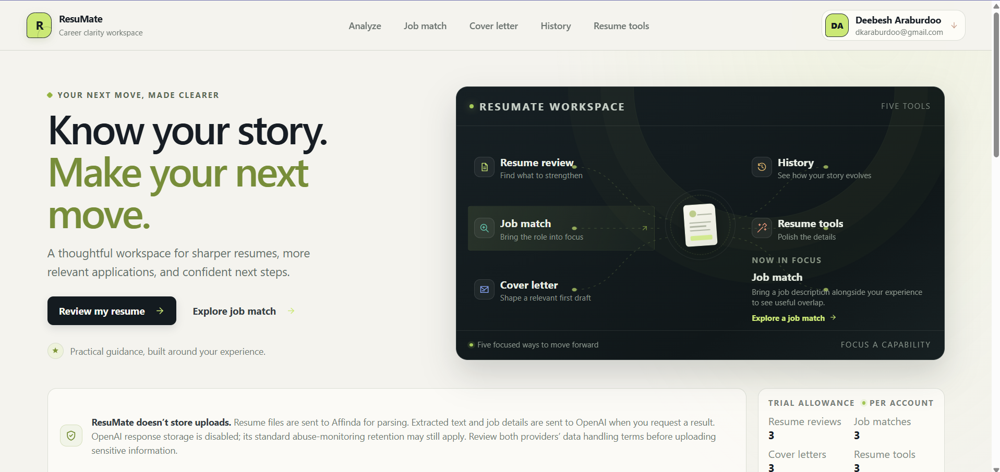
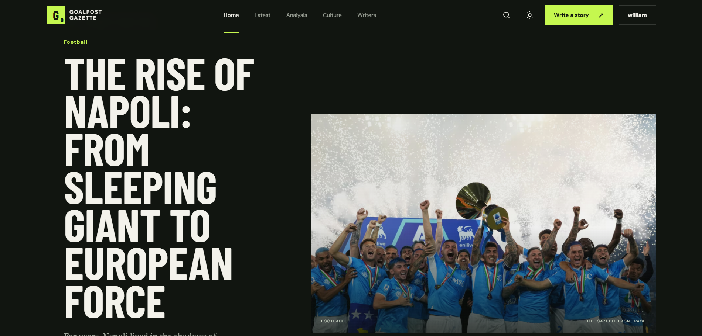
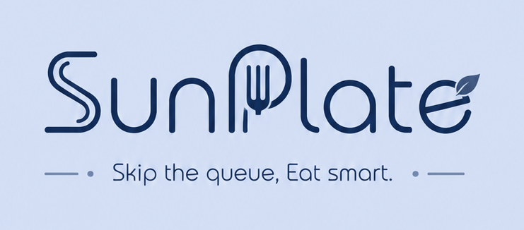
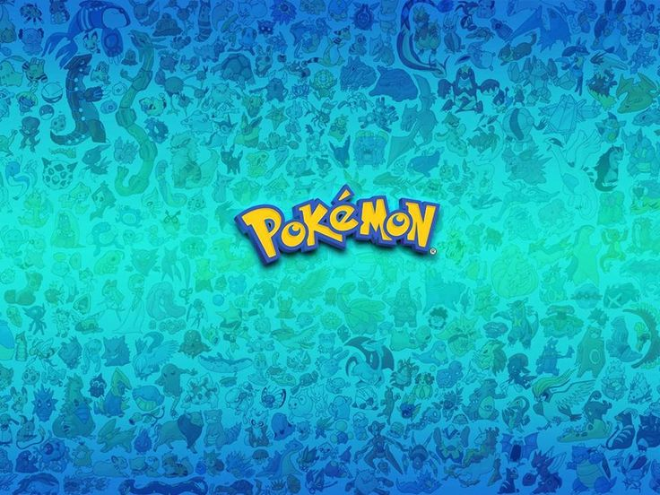
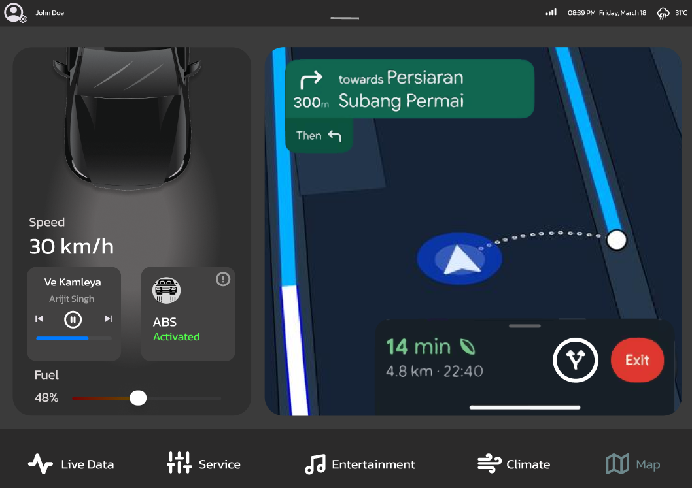
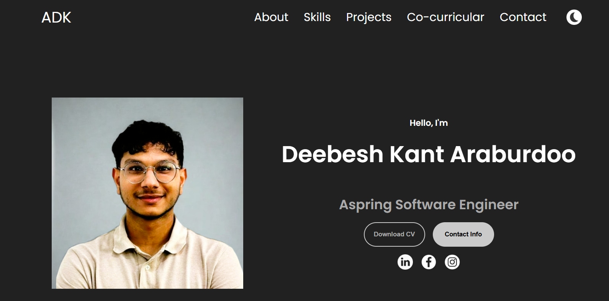

Programming
- Python
- Java
- JavaScript
- Scala
- SQL
SOFTWARE ENGINEERING · PORTFOLIO
Aspiring software engineer
I’m exploring full-stack development, artificial intelligence, and the thoughtful details that make software useful.
Open résumé PDF
01 / A LITTLE CONTEXT
 A bit of life beyond the screen
A bit of life beyond the screenMy path into technology started with an Arduino-based automated scarecrow for a Design and Technology project. Seeing code bring hardware to life turned a school project into a lasting curiosity about how software works.
I’m studying Software Engineering at Sunway University and building experience through academic projects and hands-on learning. I’m especially interested in full-stack development, artificial intelligence, and project management.
02 / TOOLS I’VE WORKED WITH
A selection of technologies and practices from my coursework and projects.
A SMALL MAP OF MY WORK
Choose a project to see the technologies behind it. Every project is also listed below.
PROJECTS
TECHNOLOGIES
ResuMate connects Python, Flask, Auth0, Affinda, and OpenAI.
View ResuMate03 / SELECTED WORK
Coursework, experiments, and projects that helped me learn by making.

01 AI · CAREER TOOLS
Transformed a Streamlit and Gemini prototype into a responsive Flask web app with Auth0 Google sign-in, Affinda resume parsing, and OpenAI-generated career feedback. Built resume analysis, job matching, cover-letter drafting, writing tools, a transparent Structure score, and persistent account history. Deployed on Render with PostgreSQL, request limits, and privacy controls.
The custom workspace includes Analyze, Job match, Cover letter, History, and Resume tools. Affinda parses PDF, Word, OpenDocument, RTF, text, and common image files; OpenAI generates focused feedback and writing support. The Structure score is a documented heuristic based on extraction quality and resume evidence—not an employer ATS score or hiring prediction. Accounts can access up to 25 saved review reports across sessions, with controls to clear history or delete trial data. Uploaded files and full extracted resume text are not stored; resume files are sent to Affinda for parsing, and extracted text plus relevant job details are sent to OpenAI when feedback is requested.

02 FULL-STACK · FOOTBALL PUBLISHING
Redesigned a basic football blog into a responsive editorial publication, keeping a vanilla HTML, CSS, and JavaScript frontend with an Express server and moving application data from MongoDB to Supabase-hosted PostgreSQL.
The updated experience includes responsive football editorial pages, dark and light themes, reduced-motion support, search, category filters, popularity sorting, paginated loading, article metadata and structured data, account and writing interfaces, saved stories, likes, comments, and follows. Authentication remains app-managed: passwords use bcrypt and sessions use HTTP-only SameSite cookies; registration cannot grant an elevated role. A Supabase SQL schema adds profiles, articles, likes, bookmarks, comments, follows, reports, and notifications with constraints, indexes, and row-level security. A one-time migration script copies MongoDB data without deleting the source. The local article API returned two published articles. Email verification, password recovery, persistent media uploads, rich-text autosave, public profiles, a complete writer dashboard, moderation tools, and notifications remain unfinished. Legal pages are drafts, and this current workspace version has not been deployed.

03 MOBILE · CAMPUS FOOD
A mobile food-ordering and campus meal-planning prototype for Sunway University, with role-specific experiences for campus customers, food vendors, and administrators.
The student experience includes vendor and menu discovery, search and recommendations, dietary information, estimated preparation times, cart and checkout, and order tracking. The prototype also includes vendor and admin workflows. Payment features use test-mode or simulated flows; this is an assignment prototype, not a production service.
MORE PROJECTS
Explore a few more things I’ve built and designed.
04 DESKTOP APP
A Scala and ScalaFX desktop application concept for affordable meal delivery services for university students.
Designed for a PRG2104 assignment, the app includes subscription meal plans, order tracking, payment processing, and an admin dashboard for users and menus.

05 TEAM PROJECT · GAME
A Java-based Pokémon capture simulation built as a team project, using object-oriented programming and CSV-based persistence.
The project includes authentication, capture mechanics, a Golden Sand reward system, UML-driven development, and exception handling.

06 INTERFACE DESIGN
A Smart Vehicle Performance System interface concept spanning a mobile app and an in-car display.
Designed for the SEG2202 module, the assignment focused on user experience across both the phone application and vehicle display.

07 WEB · PERSONAL
A responsive portfolio built with vanilla HTML, CSS, and JavaScript to document my projects and learning.
The earlier version included a light/dark theme, project pagination, and an activity slideshow.
08 COMPUTER SCIENCE
A collection of interactive applications for exploring core algorithms and data structures.
Includes a binary search tree visualization, a Dijkstra pathfinding adventure, and a Sudoku generator and solver using backtracking.
04 / OUTSIDE THE BUILD
Community work, leadership, and sport have shaped how I collaborate and take responsibility.

COMMUNITY SAFETY
Worked with a team to donate fire extinguishers to residents of Desa Mentari, Malaysia, and organize a fire drill and live demonstration.

COMMUNITY SUPPORT
Helped a high-school team in Mauritius collect, package, and distribute food supplies to families during the COVID-19 pandemic.

ECOLOGY CLUB
As president of my high-school Ecology Club, I organized a cleaning drive around the school and surrounding areas.

SPORT
Playing football has given me another way to practice teamwork, discipline, and communication.
05 / START A CONVERSATION
Interested in my work or want to talk about software? I’d be glad to hear from you.